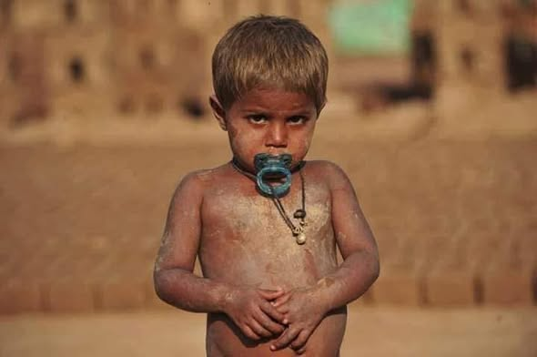

The honest story of who we serve, why they're targeted, how Grace Charity School fights back, and what it actually costs to do this work.
Across Pakistan, an estimated 3.5–4 million people work as bonded laborers in brick kilns. Here's how the trap works: a family borrows a small sum from a kiln owner — often just $600 to $1,200 — to cover an emergency. To repay it, they go to work at the kiln. But the kiln owner sets both their wages and the interest, so the debt rarely shrinks. Children as young as five join their parents at the kiln to speed up repayment. When a parent dies still owing money, the debt passes to their children. Families can spend generations working off a debt that started with one grandparent's medical bill.
This is why we call it slavery, not just poverty. A family in bonded labor cannot simply quit — the debt, and the threat of violence for leaving, keeps them there.
Christians make up less than 2% of Pakistan's population. Open Doors' 2026 World Watch List ranks Pakistan the 8th most dangerous country in the world to be a Christian, citing systemic discrimination, violence, forced conversions, bonded labor, and gender-based persecution — with minimal protection from the state.
Nowhere is that discrimination clearer than in the brick kilns. Religious minorities are roughly 5% of Pakistan's population, but in the brick-kiln regions of Punjab and Sindh, they make up as much as half of all bonded laborers — locked out of other jobs by prejudice, then trapped by debt once inside. Some kiln owners have been documented offering to cancel a family's debt in exchange for converting to Islam.
Grace Charity School exists specifically for these children. This isn't generic poverty relief — it's standing with a persecuted minority that has almost nowhere else to turn.
Sources: Open Doors World Watch List 2026; Global Christian Relief; Human Trafficking Search. Figures reflect the most recent published estimates and may shift as new reports are released.

PK Christian Sponsors is the U.S.-based partner that keeps Grace Charity School funded — we don't run the school ourselves; we exist to connect American donors directly to Pastor Victor's team on the ground, and to send the money where it's needed without a middleman.
Once a child is enrolled, the calculation for their family changes: school replaces labor, and the cycle that trapped their parents has nowhere left to take hold.
Grace Charity School doesn't wait for families to find their way to a classroom door — the team goes to them. Staff visit brick-kiln communities directly, build trust with families over time, and work to free a child from their labor obligation, often alongside local church partners.
Once enrolled, a child gets a full day built on two pillars: academic instruction (reading, writing, math) and Bible-based discipleship and mentoring — plus the meals, healthcare, and housing support that make it possible for a family to actually say yes to school instead of income.
We'd rather show you real numbers than make big promises. Here's what we can verify today:
We believe transparency matters as much as impact. Operating a school for at-risk children in this region carries real, ongoing risk — not the polished version nonprofits sometimes present:
Grace Charity School is run by a team of approximately 30 staff. They aren't hired for credentials alone — they're chosen for their ability to be patient and nurturing with children who have never had reason to trust an adult before. Every staff member returns each year for further training to sharpen how they teach, so the classroom keeps getting better for the children in it.
Founder & Principal, Grace Charity School
Pastor Victor leads Grace Charity School on the ground in Pakistan. Raised in a large family that knew real poverty, he came to faith in 2001 and was baptized soon after — the start of a calling that reshaped the rest of his life. By 2007 he was preaching in the open streets of his community, and what began as informal gatherings grew into the ministry now known as God's Grace Ministries of Pakistan.
As he worked alongside families in some of the country's poorest brick-kiln communities, he felt called to start a school for the children working there — with no funding, no building, and no guarantee it would work. In 2012, that conviction was tested: he was abducted, tortured, and held for 24 days before being freed. He didn't stop. He married Sofia in 2013, and by 2016 the ministry had its own school building. Today, Grace Charity School serves hundreds of children — proof, in his words, that God provides even when the odds say otherwise.
You can help by sharing this story and raising awareness about bonded child labor in Pakistan — in memory of children like Iqbal Masih, the young Pakistani activist who gave his life speaking out against it. Together, we can help ensure every child has the opportunity to receive an education and grow up safe.
Share this page with your friends and family, and join us in being a voice for the voiceless.
With love, prayers, and gratitude,
Pastor Victor Sammuel
Grace Charity High School, Pakistan
Our vision is simple: every child freed from bonded labor, learning in a classroom instead of working in a kiln, growing up knowing they matter — safe, educated, and given a future their family's debt can't take away.
We respond to need with the same tenderness Christ showed the vulnerable.
We steward every gift with integrity and remain committed for the long term.
We work through local churches and leaders, not around them.
We walk alongside families in ways that honor and empower, never diminish.

PK Christian Sponsors affirms the historic Christian faith: one God eternally existing in three persons; the Bible as God's inspired Word; salvation through faith in Jesus Christ alone; and the call of every believer to love God and love neighbor — including "the least of these" (Matthew 25:40).
Every program we run is offered without regard to a family's religion, and participation in any spiritual activity is always voluntary.
Victor Sammuel comes to faith and is baptized — the beginning of the calling that led here.
God's Grace Ministries of Pakistan is founded, starting outreach in the brick-kiln communities of Punjab.
Grace Charity School begins serving its first children from brick-kiln families.
Victor is abducted and held for 24 days over this work. He is released — and returns to it.
Grace Charity School moves into its own building for the first time.
700+ children served; PK Christian Sponsors continues as the U.S. partner funding the work.
The people who keep this partnership running from the U.S. side.
Leads organizational strategy and the partnership with Grace Charity School.
Coordinates directly with Victor's team on funding priorities and sponsor communication.